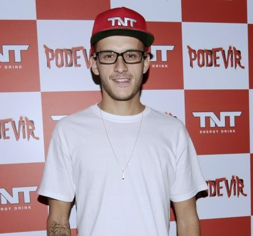

TNT ESPORTES
TNT Energy Drink reúne atletas e investe nos esportes radicais urbanos
Campeão brasileiro em 2008 e mundial em 2009, Rony Gomes comemora a ampliação do time de patrocínio, que passa a contar com quatro skatistas. “Estou com o TNT faz um tempo e não via a hora dessa equipe crescer. Skate é e sempre será uma grande família. Agora vamos poder nos encontrar mais nas sessões e cada um representar o TNT da melhor forma possível!”, declara. Também skatista, Dora Varella, tricampeã mundial amadora nos Estados Unidos, concorda com o colega de esporte. “O time TNT vem para mostrar que a parceria, o respeito e a amizade movem o skate e, mesmo sendo um esporte individual, nos faz evoluir mais rápido e nos divertir muito mais”, comemora a skatista.
